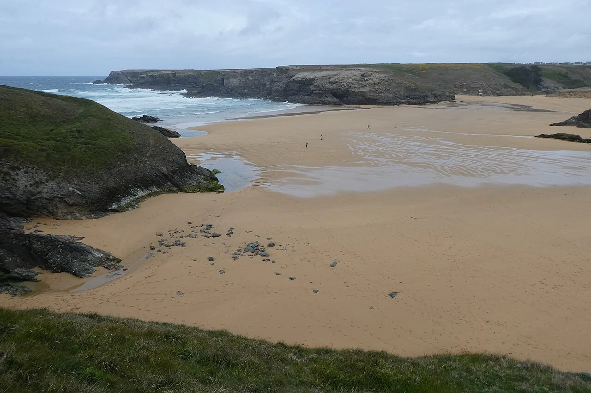

Donnant
Belle-Île-en-Mer, France · surf, bodyboard

Une plage encaissée entre les reliefs de la côte ouest de Belle-Île. Donnant est un rendez-vous du surf insulaire, avec des écoles pour choisir sa session selon les conditions.
- Lieu
- Belle-Île-en-Mer, France
- Niveau
- Variable selon les conditions
- Activités
- surf, bodyboard
- Type d'eau
- Mer / océan
- Coordonnées
- 47.31, -3.23 (position approximative du secteur)
Ouvrir dans Ocean Buddy Télécharger sur l'App Store
Source : Surfin’ Belle-Île.